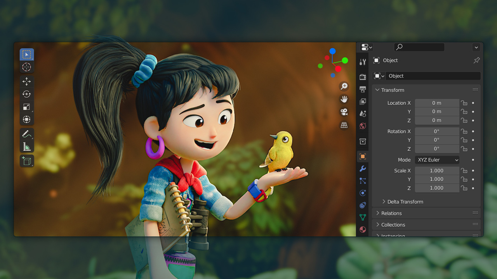
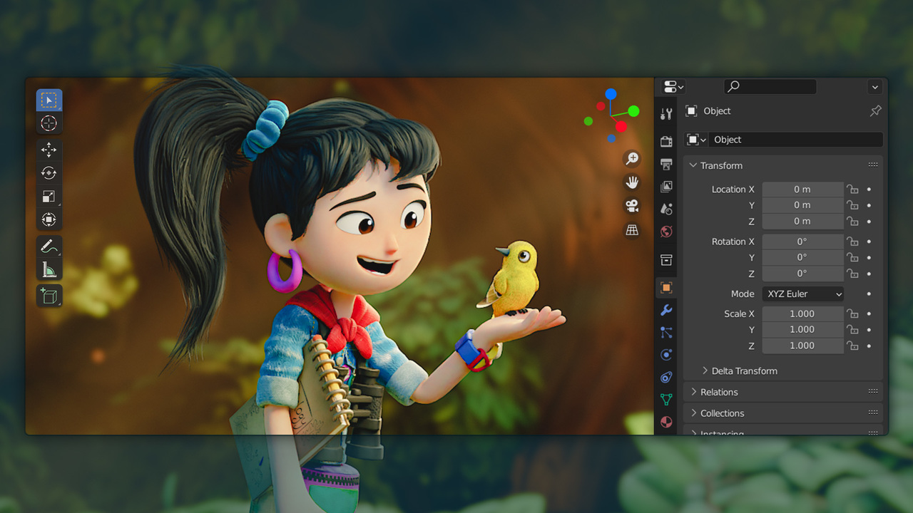

블렌더(Blender)는 GNU 일반 공중 사용 허가서에 따라 자유 소프트웨어로 릴리즈된 3차원 컴퓨터 그래픽스 소프트웨어이다.
이 프로그램은 모델링, UV 언래핑, 텍스처링, 리깅, 워터 시뮬레이션, 스키닝, 애니메이팅, 렌더링, 파티클 등의 시뮬레이션을 수행할 수 있으며 넌리니어 편집, 콤포지팅, 파이썬 스크립트 등을 통하여 쌍방향 3차원 프로그램을 제작할 수도 있다.
리눅스, macOS, 마이크로소프트 윈도우 등에서 이용할 수 있다.
블렌더는 네덜란드의 애니메이션 제작사 네오게오와 낫 어 넘버 테크놀로지스에서 자체적으로 이용할 목적으로 개발하였다.
처음 만든 이는 1989년 아미가용 레이 트레이싱 소프트웨어 Traces를 개발했던 톤 루센달이며 블렌더라는 이름은 옐로의 Baby라는 앨범에 수록된 동명의 노래 제목에서 따왔다고 한다.
버전2.77이후부터는 OpenGL지원 그래픽카드에대한 유무가 프로그램 작동에 중요한 변수로 제시된다.
여전히 2.76이전에서는 블랜더를 그래픽카드 없이 구동시킬 수 있다.
 
